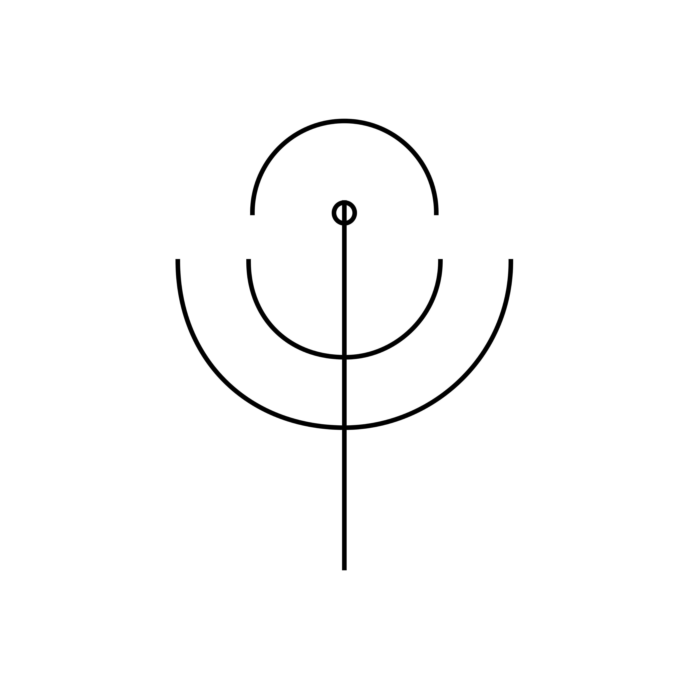

|
The Warm BucBuc For Humans thousands of parsecs from Earth |
|
New Microblogging Feature
This morning a new feature was added to your Immediate Integral Circuitry. The 21st Century fad is back, and going to be one of the mainstays of life aboard the Yeti. Your own unique voice and perspective are important in telling the story to the people we left in our Solar System. |
|

If you no longer want to receive our emails, please un-subscribe here. |